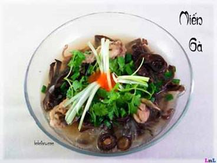

Cùng bắt tay làm thử thôi nào!
Nguyên liệu:
- Gà (thường mình dùng 2 cánh hoặc 1 đùi gà)
- 1 lạng miến, ngâm hoặc rửa qua nước lạnh.
- Nấm hương, mộc nhĩ rửa và ngâm nước nóng cho nở, nhớ giữ lại nước ngâm nấm hương.
- Hành khô thải nhỏ
- Hành lá, rau mùi rửa sạch, thái nhỏ
- Mắm, gia vị, hoặc bột nêm
Cách làm:
- Gà chặt miếng nhỏ, cho vào nồi, cho hành khô và chút nước mắm vào rim 1 tí cho thịt đậm đà và thơm.
- Mộc nhĩ thái sợi, nấm hương để nguyên hoặc cắt đôi (sau khi đã rửa sạch) cho vào gà đang rim. Cho nước ngâm nấm hương vào đun nhỏ lửa khoảng 5 phút.
- Cho thêm nước vừa ăn, thêm gia vị hoặc bột nêm rồi đun sôi. Nước vừa sôi thì cho miến vào. Nấu đến khi miến vừa mềm, chưa bị nát và cũng không còn cứng thì cho hành lá, rau mùi vào, tắt bếp luôn.
Khi ăn thì thêm tương ớt nhé, dù không ăn được cay thì cũng nên cho 1 tí, sẽ thấy ngon hơn hẳn đó